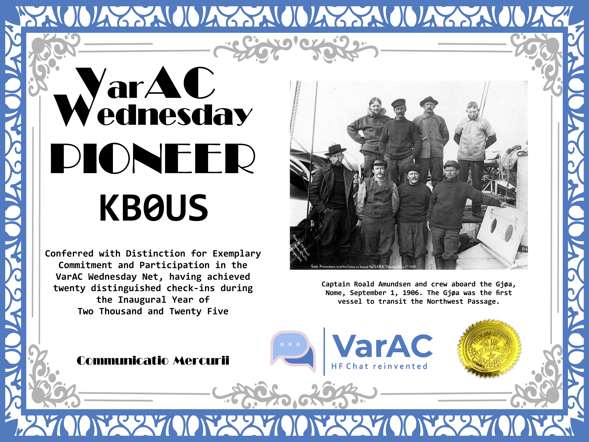

🎉 VarAC Pioneer Award 🏅
The VarAC Wednesday team is proud to introduce the VarAC Pioneer Award—a mark of dedication, perseverance, and passion for digital comms excellence.
📶 Award Criteria
Any operator who completes at least 20 weekly VarAC Wednesday check-ins during the inaugural 2025 year will be recognized as a VarAC Pioneer. This award celebrates those who helped shape the rhythm and reliability of our global check-in community.
There are 24 Wednesdays left in 2025 so everyone has an opportunity to win one of these awesome certificates.
🌐 Why This Matters
Pioneers don't just participate—they pave the way. Your consistent presence has built a strong foundation for VarAC Wednesday, amplified peer-to-peer comms, and proven that digital amateur radio has a vibrant heartbeat every Wednesday.
🏆 Recognition
- Award certificate featuring your callsign and year
- Permanent listing on our VarAC Pioneers Roll of Honor
- Special badge in future check-in summaries
📅 Final Count Begins December 31, 2025
Make sure your check-ins are logged and verified on the www.varacwednesday.net RESULTS PAGE!
Early in 2026, we'll have a form on varacwednesday.net where you can apply for the award by simply entering your call , whether you'd like A4 or 8.5"X11" and the email address for sending the certificate. All VarAC Wednesday certificates come as a PDF and are "print your own."
Big thanks to every operator who’s been part of this journey. Whether you’ve relayed messages from Ghana, linked stations from South Africa, or just consistently showed up from your shack in Maryland—you’re the reason VarAC lives and thrives.
Let’s finish 2025 strong—20 weeks and beyond. 💪
73, Mark KB0US Jason K3JSJ 